آموزش گامبهگام و مصور از اولین ورود تا پایان کامل یک چرخه خرید، آزمایشگاه، تولید و ردیابی
/account/login)پس از راهاندازی پایگاهداده با ابزار Bootstrap، با نام کاربری و رمز عبور ادمین وارد شوید. در پایین کارت ورود میتوانید بین فارسی (RTL) و English (LTR) جابهجا شوید.
در بالای صفحه پس از ورود، دکمه جمعکردن منوی کناری، مسیر صفحه (Breadcrumb)، سوییچ زبان، زنگ اعلانها و منوی پروفایل کاربر (تغییر تم روشن/تیره/سیستم، نشستهای فعال، تغییر گذرواژه و خروج) قرار دارد. با کلید Ctrl + K پنجره جستجوی سریع صفحات باز میشود.
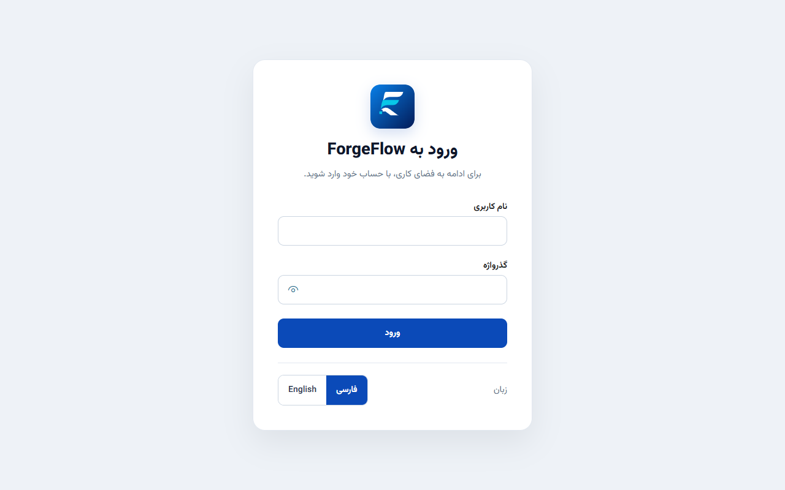
/account/login (تم روشن، فارسی RTL)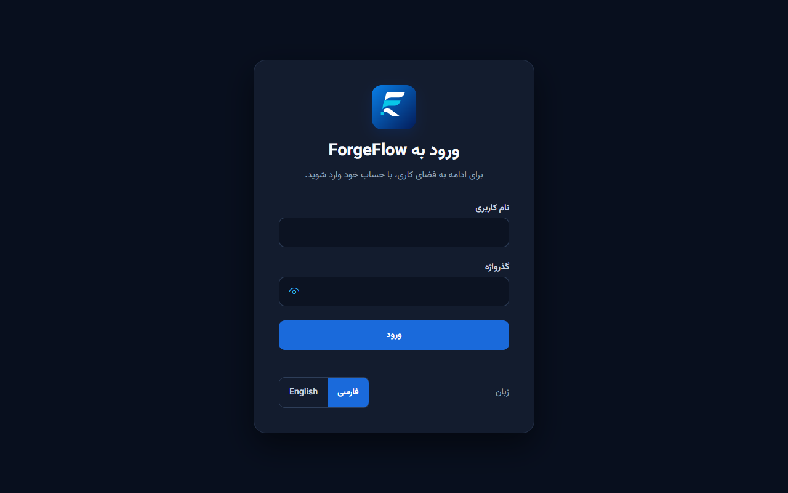
/account/login (تم تیره، فارسی RTL)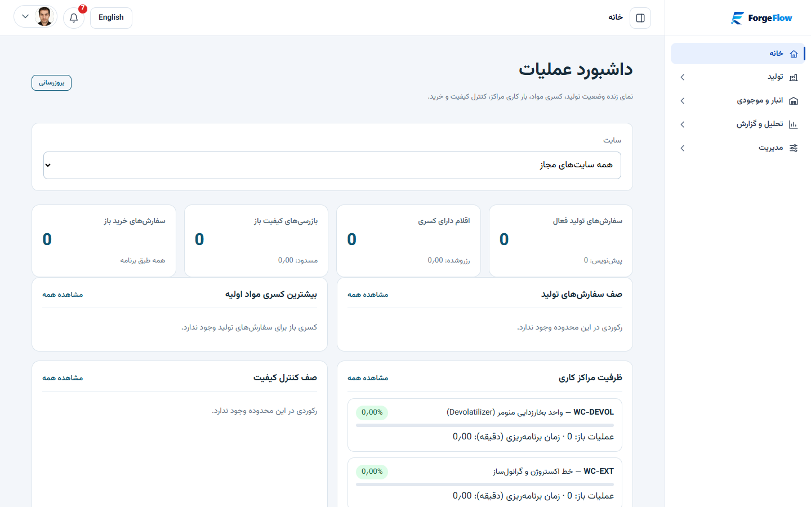
/) و ظرفیت مراکز کاریآیتمهای منو بر اساس دسترسیهای کاربر (Role / Permission) نمایش داده میشوند:
| گروه منو | آیتمهای زیرمجموعه | مسیر URL |
|---|---|---|
| بدون گروه | خانه (داشبورد عملیاتی) | / |
| تولید | سفارشهای تولید • ساختارهای محصول (BOM) • مراکز کاری • فرآیندهای ساخت • بازرسی و قرنطینه | /production-orders، /boms، /work-centers، /routings، /quality |
| انبار و موجودی | انبار و گردش کالا • ردیابی لات/بچ • سفارشهای خرید • تأمینکنندگان • کاتالوگ کالا • واحدهای سنجش | /inventory، /traceability، /purchase-orders، /suppliers، /items، /units |
| تحلیل و گزارش | گزارشها | /reports |
| مدیریت | سازمانها • سایتها • کاربران • نقشها • ممیزی و رویدادها • لاگ خطاها | /organizations، /sites، /users، /roles، /audit، /errors |
/organizations) و سایتها (/sites)سازمان و سایت اول هنگام Bootstrap ساخته شدهاند. تمام دادههای عملیاتی (کالا، انبار، خرید، تولید و کنترل کیفیت) در سطح یک سازمان و در صورت نیاز محدود به یک سایت (کارخانه/انبار) ثبت میشوند.
از مسیر میتوانید نام و وضعیت سازمان را مدیریت کنید. واحدهای پولی معاملاتی (مثل IRR و USD) از مسیر قابل مدیریت هستند.
از مسیر سازمان مربوطه را انتخاب کرده و با زدن دکمه افزودن سایت، کد یکتا (پس از ایجاد فقط خواندنی است) و نام سایت را ثبت کنید.
/users) و نقشها (/roles)| نام نقش سیستمی | سطح اعمال (Scope) | کاربرد |
|---|---|---|
OrganizationAdministrator | سازمان | مدیر کامل سازمان (کاربران، نقشها، سازمان، سایتها و دسترسی کامل) |
SiteOperator | سایت | اپراتور محدود به سایتهای مجاز |
DeploymentProvisioner | پلتفرم | ایجاد سازمانهای جدید (ساخته شده در سطح استقرار) |
| ماژول | کدهای مجوز واقعی در سیستم |
|---|---|
| خرید و تأمین | Procurement.Read • Procurement.ManageSuppliers • Procurement.ManageOrders • Procurement.ReceiveOrders |
| آزمایشگاه و کیفیت | Quality.Read • Quality.Manage |
| تولید و عملیات | ProductionOrders.Read • ProductionOrders.Manage • Routings.Manage • Operations.Execute |
| انبار و کاتالوگ | Inventory.Read • Inventory.Manage • Items.Read/Manage • Units.Read/Manage • Boms.Read/Manage |
| گزارش و ممیزی | Reports.Read • Reports.Export • Audit.Read • Audit.Export • Diagnostics.ErrorLogsRead/Manage |
/units)ابتدا واحدهای پایه مثل کیلوگرم (KG)، گرم (G)، لیتر (L) و عدد (PCS) و تبدیلهای متناظر (یا با یک کلیک «افزودن واحدهای استاندارد») و واحدهای پولی را ثبت کنید.
/items)برای هر ماده اولیه (مثل استایرن منومر)، نیمهساخته یا محصول نهایی (مثل گرانول GPPS):
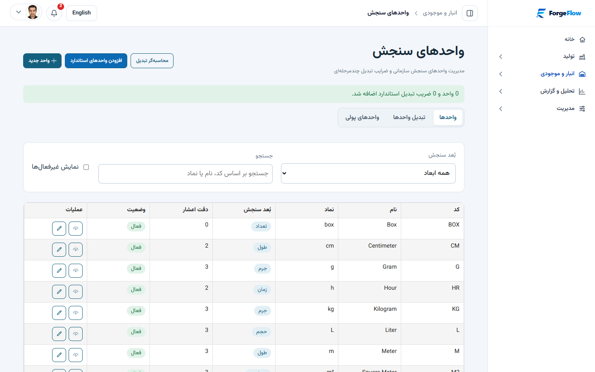
/units)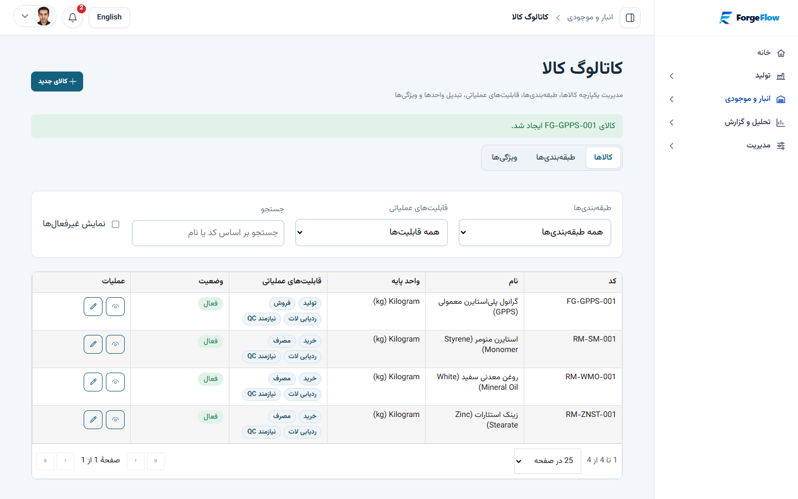
/items)/boms)کالای خروجی، مقدار مبنای تولید (مثلاً ۱۰۰۰ کیلوگرم بچ: ۹۷۹ کیلوگرم استایرن منومر + ۱۹ کیلوگرم روغن سفید + ۲ کیلوگرم زینک استئارات) را ثبت، «تایید نسخه» و «فعالسازی» کنید.
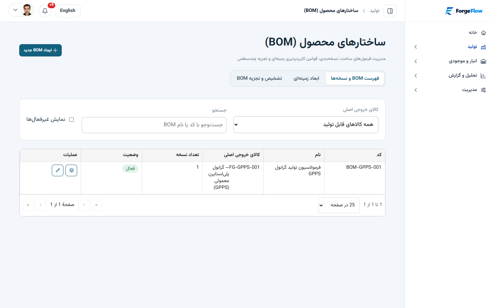
/boms)ابتدا مراکز کاری (مثل راکتور، خط اکستروژن، بستهبندی) را در /work-centers بسازید، سپس در /routings مراحل توالی تولید هر محصول را با زمان راهاندازی و اجرا به مراکز کاری متصل کنید.
/suppliers) و سفارشهای خرید (/purchase-orders)هنگام زدن دکمه «ثبت رسید کالا» روی سفارش خرید تأییدشده، انبار مقصد، مقدار دریافتی و کد لات (Lot Code) وارد میشود. اگر کالا دارای مشخصات بازرسی (Spec) فعال برای نقطه کنترل ورودی باشد، سطرهای آزمایش بهصورت خودکار روی برگه بازرسی قرار میگیرند.
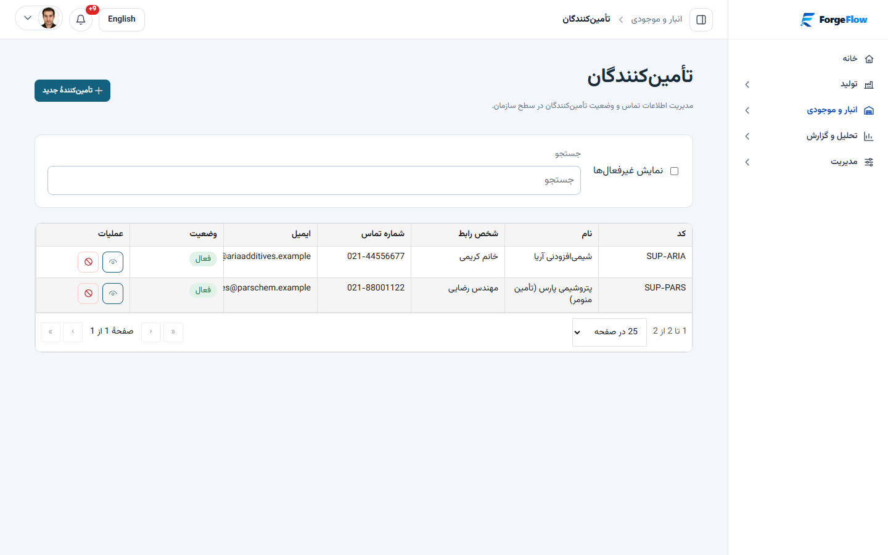
/suppliers)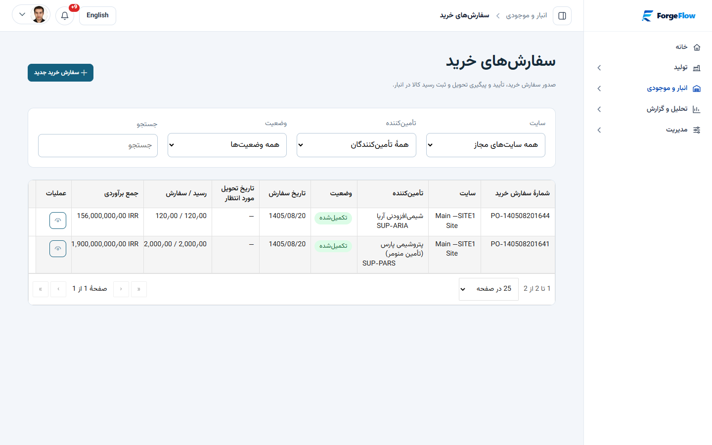
/purchase-orders)/quality) — ۴ تب تخصصیبرای جلوگیری از محدودیت به یک نوع پارامتر، در صفحه سیستم به ۲ لایه تقسیم شده است:
برای هر نوع آزمون (مثلاً MFI، خلوص، رطوبت، دانسیته) یک بار پارامتر را با کد، نام، نماد نمایشی، روش آزمون، واحد و نوع داده (عددی / متنی / بولین) تعریف کنید.
الگو را برای کالا (مثلاً استایرن منومر) یا دستهبندی کالا ایجاد کرده و پارامترهای مورد نظر را با حداقل، حداکثر، مقدار هدف و وضعیت الزامی اضافه کنید. در صفحه کاتالوگ کالا هم الگوی فعال آن کالا قابل مشاهده است.
روی بازرسی در انتظار کلیک کنید. اگر الگو بعداً ساخته شده، دکمه بارگذاری الگوی مشخصات را بزنید. مقادیر عددی آزمایشگاه را وارد کرده و شماره گواهی (CertificateNumber) را ثبت کنید. سیستم بهطور خودکار انطباق با محدوده (Pass/Fail) را محاسبه میکند.
در صورت رد شدن یک پارامتر، قبول با ارفاق (Concession) نیازمند ثبت دلیل ارفاق است. پس از ثبت رأی، در صفحه کنترل کیفیت، جزئیات لات، سفارش تولید، انبار و ردیابی، دکمه مشاهده و چاپ گواهی آنالیز (COA) برای ارائه به واحد تولید یا مشتری در دسترس است.
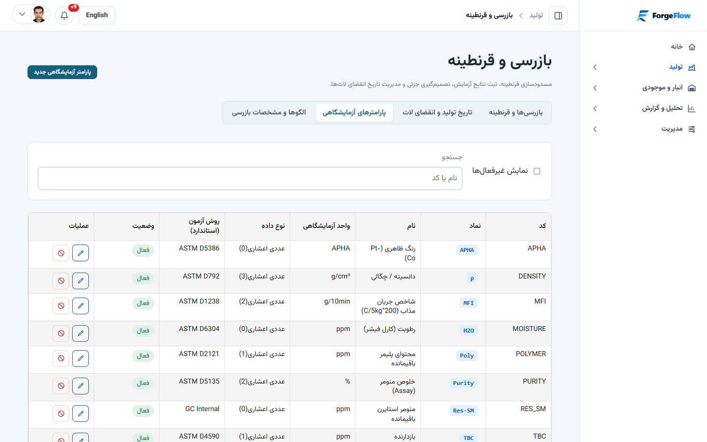
MFI، Vicat، PURITY و ...)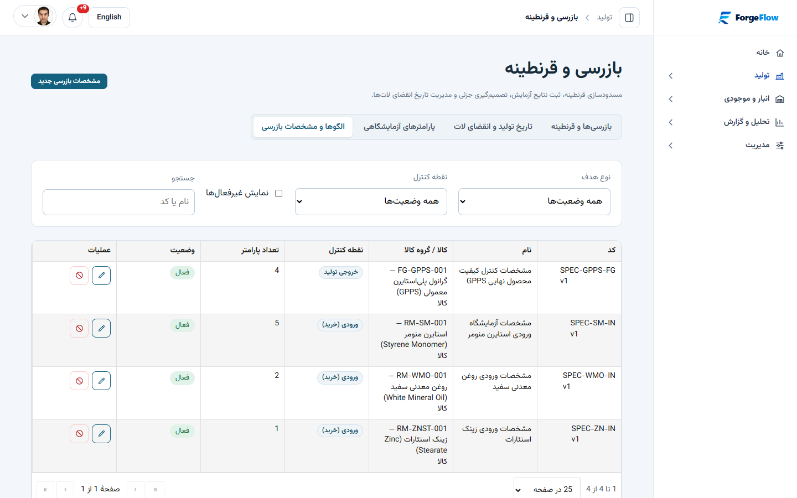
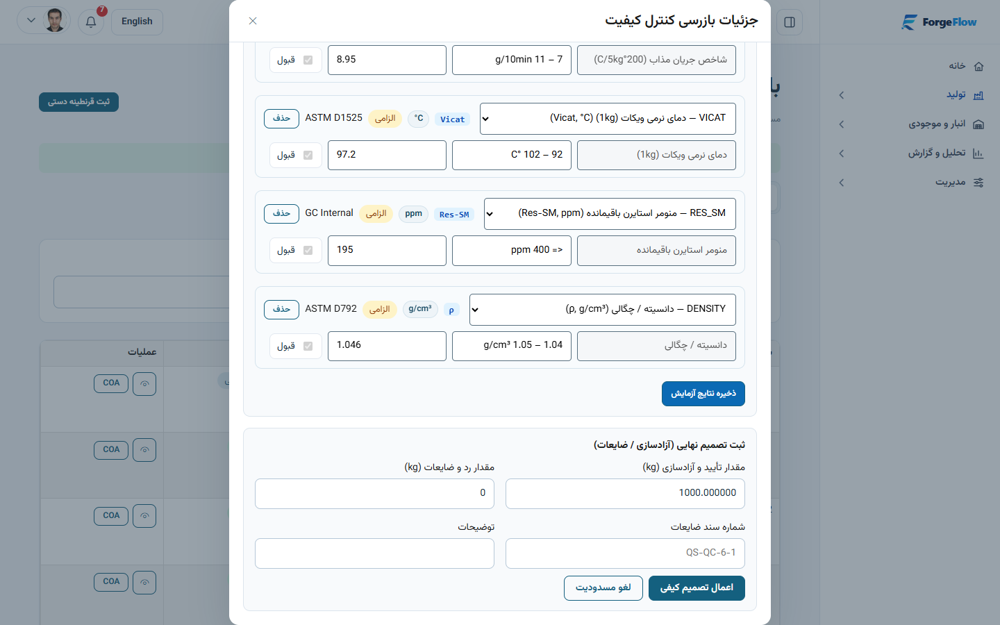
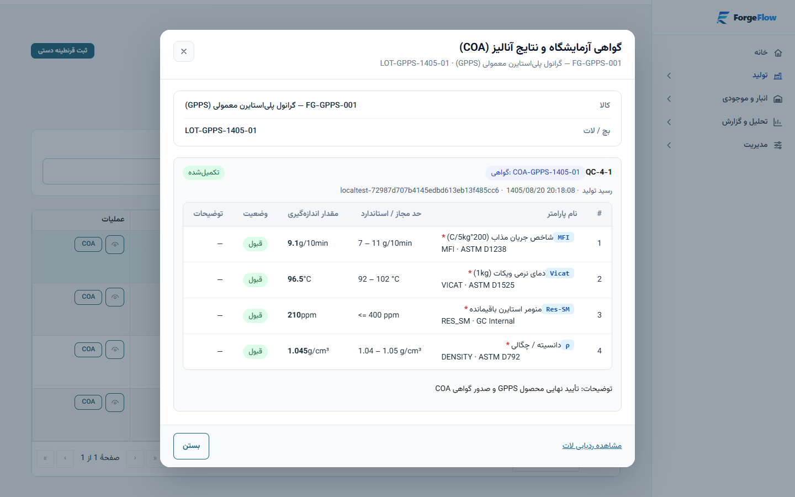
COA)/production-orders)محصول، مقدار برنامهریزیشده، سایت و انبار مقصد را انتخاب کنید. سیستم ساختار BOM و مراحل فرآیند ساخت را روی سفارش اسنپشات میکند. با زدن «آزادسازی» سفارش آماده تأمین مواد و اجرا میشود.
برای هر ماده مصرفی، دکمه رزرو را بزنید تا به روش FIFO یا با انتخاب دستی انبار/لات (همراه با گواهی COA قابل مشاهده)، موجودی از مقدار آزاد (Available) کسر و به این سفارش اختصاص یابد.
مراحل Routing را در بخش عملیات شروع و تکمیل کنید و اسناد مصرف مواد اولیه (ProductionIssue) را ثبت نمایید؛ رزروهای تخصیصیافته بهصورت خودکار با مصرف کالا تسویه (Consume) میشوند.
Complete)با ثبت مقدار واقعی تولیدشده، موجودی محصول نهایی (و لات تولیدی) در انبار مقصد ثبت شده و رزروهای باقیمانده بهصورت خودکار آزاد (Release) میشوند.
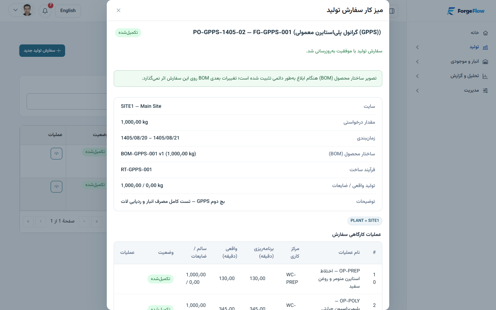
/production-orders)/inventory)| نام تب | کاربرد مدیریتی |
|---|---|
| موجودی فعلی | مشاهده موجودی کل، مقدار مسدود (قرنطینه)، مقدار رزرو شده و مقدار قابل دسترس (Available) به تفکیک انبار و لات + مشاهده COA |
| اسناد و گردش کالا | ثبت رسید دستی، حواله مصرف، انتقال بین انبارها و تعدیل موجودی |
| انبارها | تعریف انبارهای هر سایت (مواد اولیه، قرنطینه، محصول نهایی) |
| رزروها | مدیریت یکپارچه همه رزروهای فعال سفارشهای تولید و آزادسازی دستی در صورت نیاز |
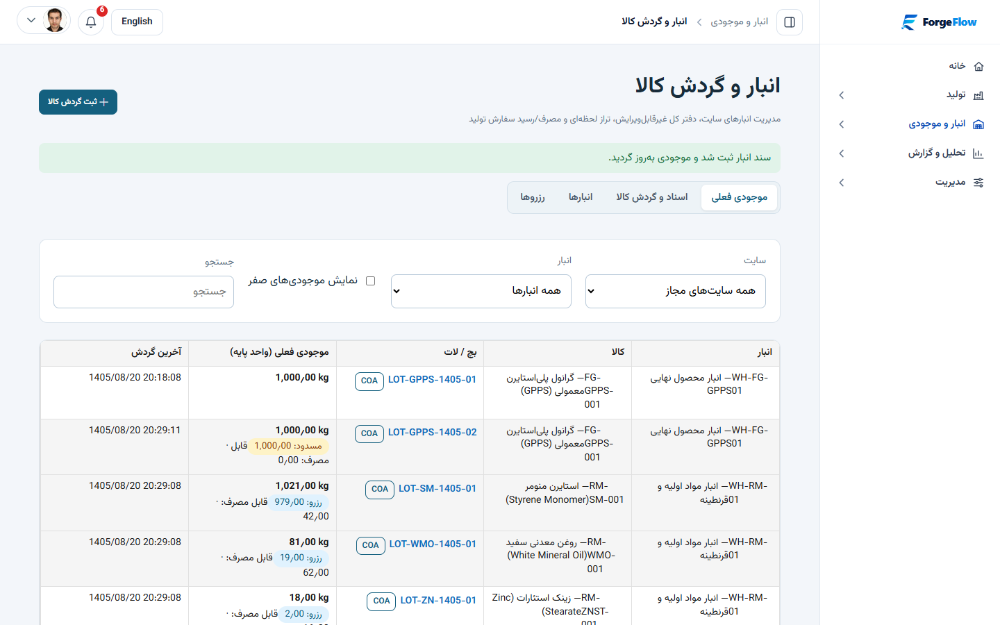
/inventory)/traceability)با انتخاب کالا و شماره لات، مسیر کامل از تأمینکننده و سفارش خرید، نتایج بازرسی و گواهی COA تا مصرف در سفارشهای تولید و لات محصول نهایی را ردیابی کنید.
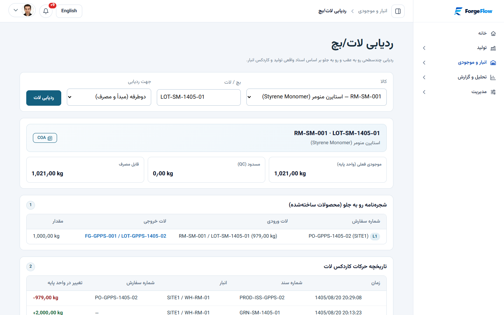
LOT-GPPS-1405-02 تا مواد اولیه (/traceability)/reports)شامل گزارش کمبود مواد (با کسر موجودی رزرو شده و مسدود)، انحراف مصرف واقعی نسبت به BOM استاندارد، خلاصه تولید و وضعیت کیفیت، همراه با خروجی قابل دانلود.
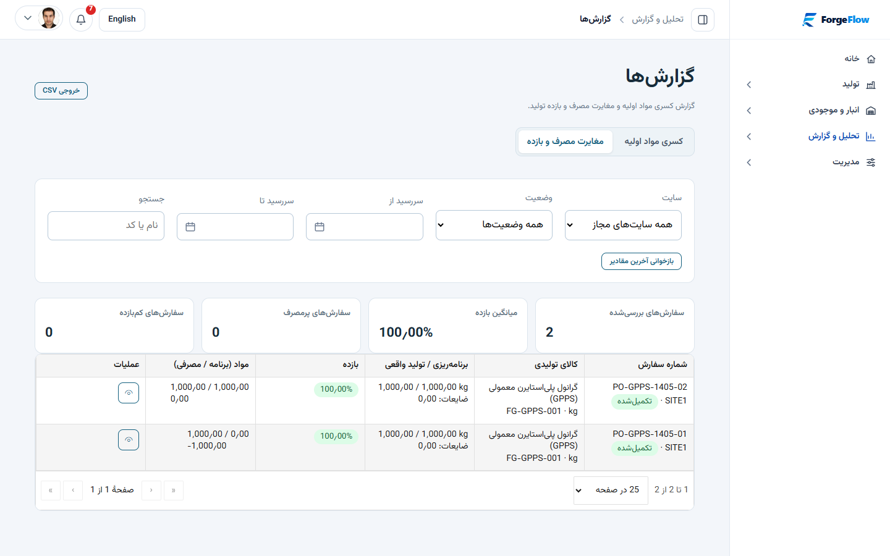
/reports)تمام تغییرات سازمانی، امنیتی و عملیاتی با شناسه Correlation و عامل ثبت میشوند و ادمین میتواند سوابق ممیزی را در /audit و خطاهای احتمالی سیستم را در /errors بررسی کند.